Children of Light Academy
A small school, given its light.
New Port Richey, Florida · volunteer work · identity, design system, logo animation, collateral and enrollment forms.
What we delivered.
Identity
- Rebranding routes, four
- New logo, with an asset pack in every format
- Brand book and identity guidelines
- Motifs and icons
Digital
- The paper enrollment packet turned into a mobile online form, with an emailed confirmation
Film
- Logo animation
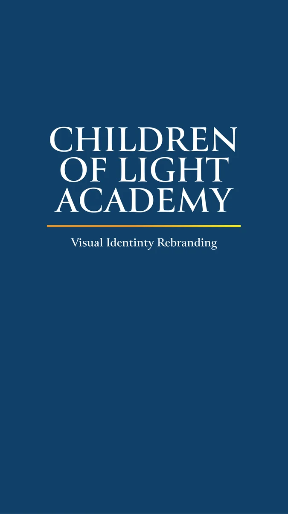
Rebranding route, first version 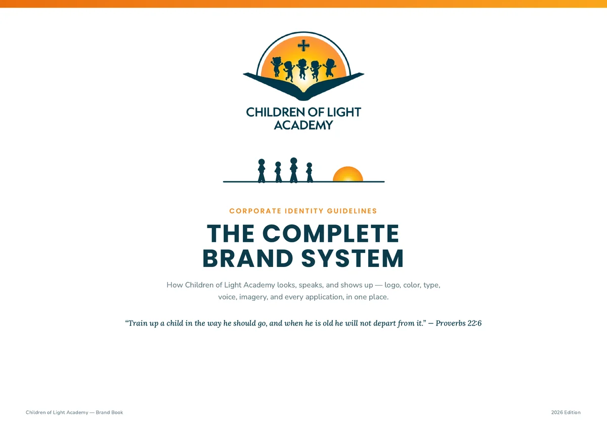
Brand book: the cover 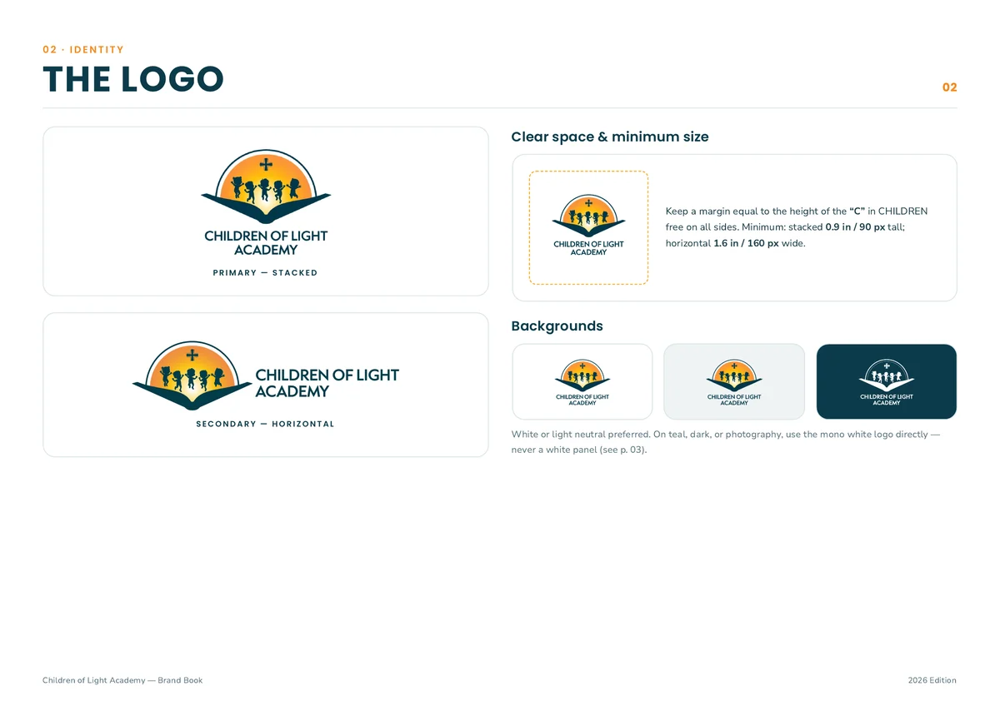
Brand book: the logo page 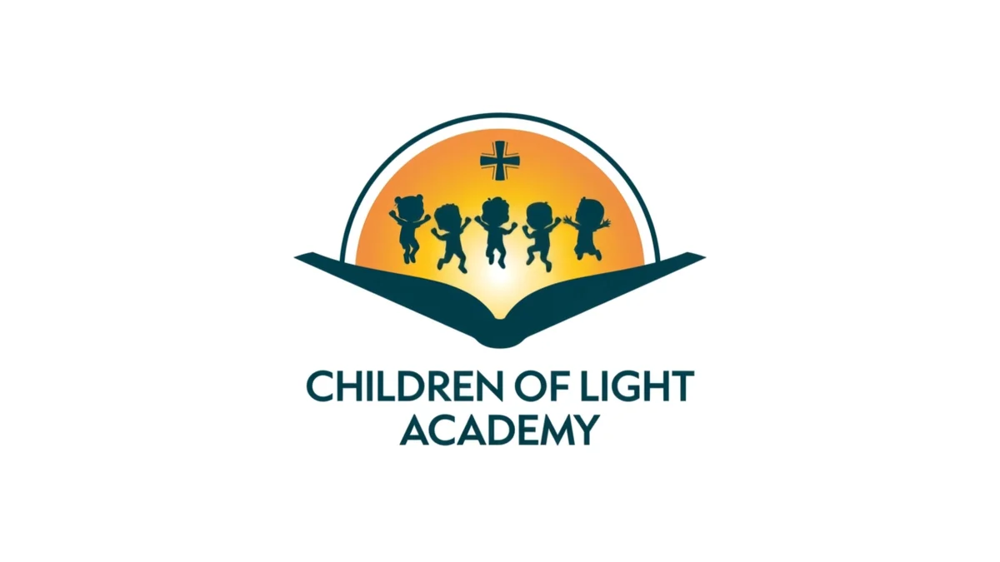
The logo animation, last frame
From the delivered files and the job register.
The mark.
The idea is a guiding light. Everything comes from the logo’s scene: children at play, lifted by the rising sun, standing on an open book.
One system, every piece.
Two colours carry the brand. Everything else is neutral or derived from them.
Teal#0C3B4A · primary, the ink
Sunrise Orange#F5891F · the accent
DawnThe one gradient: orange, amber, gold, used inside the sun
Paper#FFFFFF · pages
Mist#EEF3F4 · bands
Line#DDE6E8 · rules
YOUR CHILD’S FIRST STEPS START HERE
Poppins · headings, buttons, navigation
A secure, enriching environment where children explore, learn, and grow.
Nunito Sans · reading text
“Train up a child in the way he should go.” Proverbs 22:6
Lora Italic · scripture only, always with an orange citation
From the sign to the enrollment form.
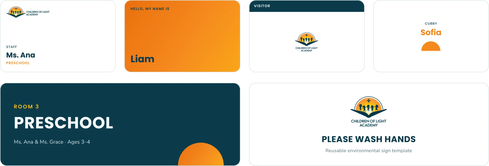
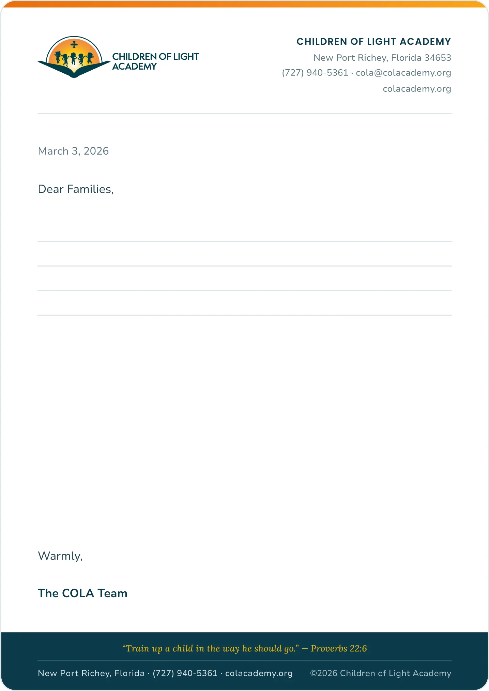
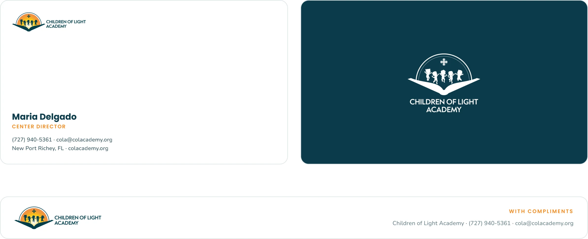
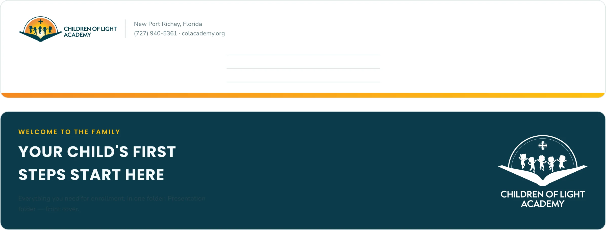
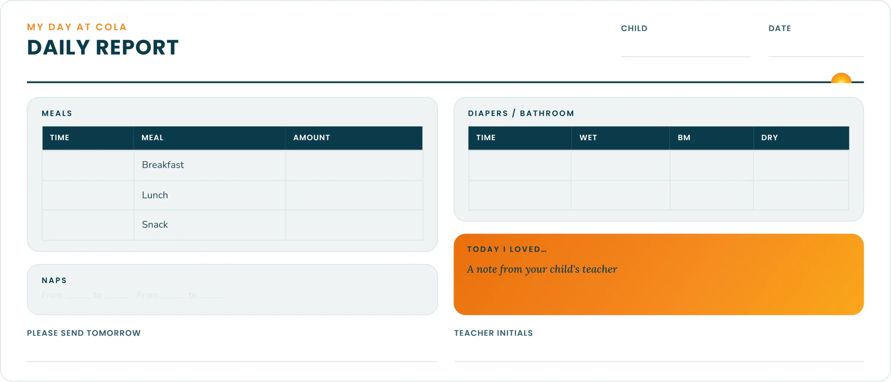
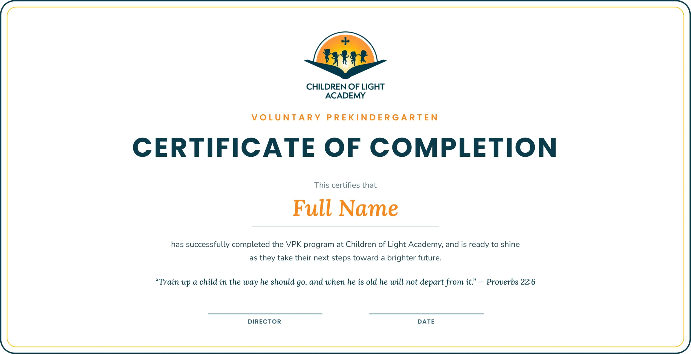
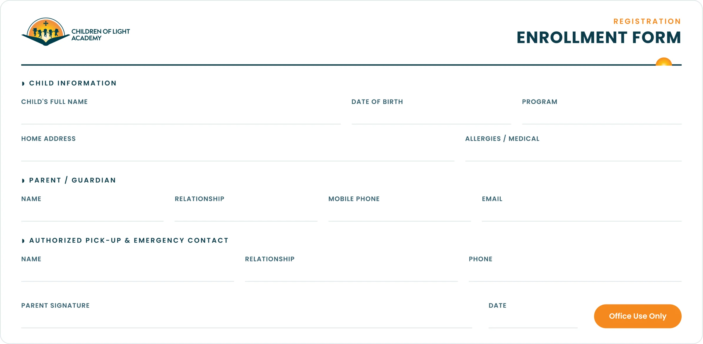
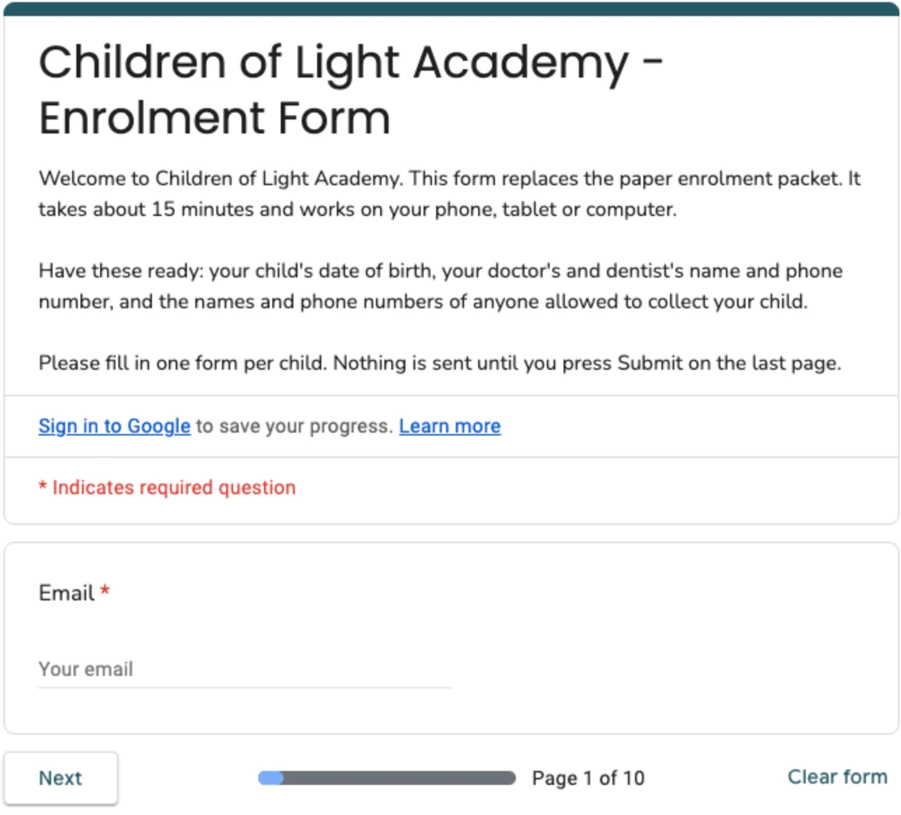
Creative Director, Brand & Experiential